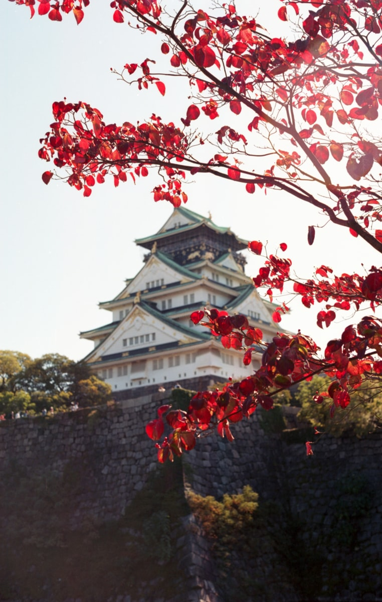
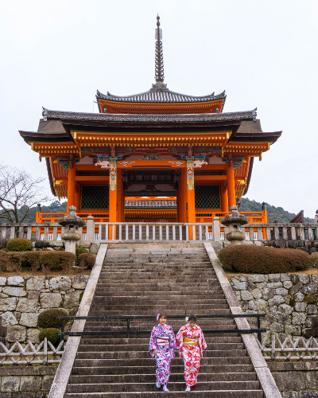
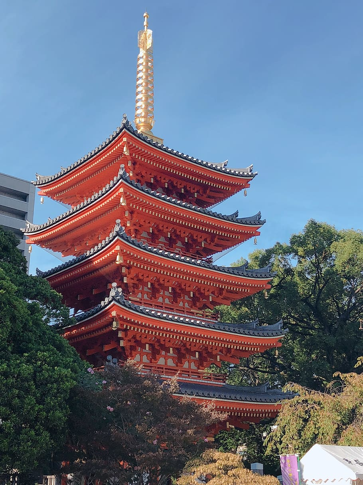

No matter your taste, budget or style, there’s something for everyone in Tokyo. Each neighbourhood offers a unique character:
Koenji, the gritty, art-loving corner, is just a short ride from Shinjuku.

Osaka
By Culture Trip
From its food to its history, Osaka is one of the most vibrant and culturally distinct places in Japan.
For over a thousand years, this port city has been a Japanese shopping hub.

Kyoto
By Culture Trip
Kyoto is one of Japan’s most unique cities, with its 1,100-year history as Imperial Japan’s capital. If Osaka is the foodie’s city,
then Kyoto is the cultural hub with a wealth of Buddhist temples.

Fukuoka
By Culture Trip
Fukuoka is the gateway to Kyushu, the sun-soaked southern end of Japan’s four major islands. And this outdoorsy city brims with Hakata ramen,
yatai food stalls.